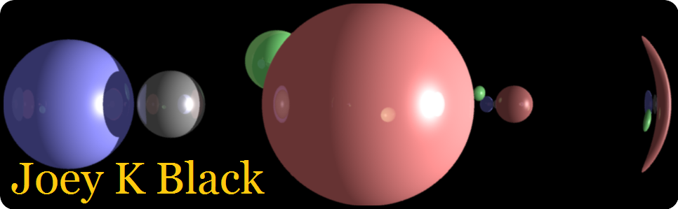
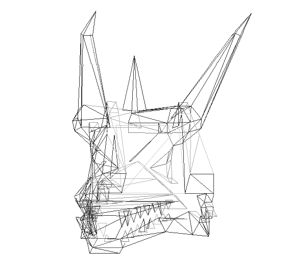
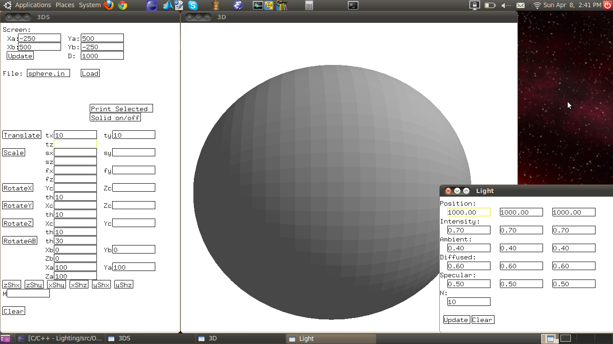

The following projects were developed for a graphics class at UNF. They were created using C++ and OpenGL.
The banner at the top of this page is a rendering of spheres using ray tracing along with light, shadowing, reflection and refraction techniques.
This project adds animation to 3D wire frames. The image below is of a dragon head being rotated about the y axis.

This project uses the painter's algorithm to add lighting to 3D models. The image below shows a sphere with light shining on it from the upper right.
